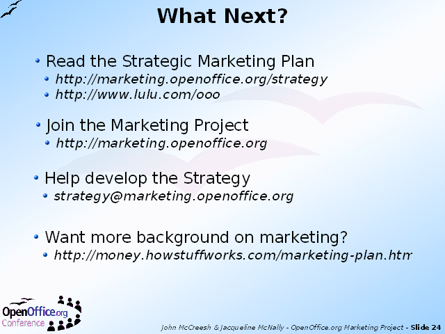

Notes:
For the strategy to work, it is absolutely essential that as many active members of the Community help in the next stage of its development.
The Strategy can be downloaded from the Strategy Home Page. It's quite a large document (54 A4 pages), so for people who would prefer to get a printed version, it can be ordered worldwide from an 'on demand' printer Lulu.com as a paperback book for a very reasonable USD7.95.
At the Workshop, all participants were encouraged to buy two copies, one for work and one for home (!), and read it whenever they had a spare five minutes. Agree with it; disagree with it; but most important, send in your views.
There is a downloadable feedback form on the site, or a discussion group to join for general debate.
For people who feel nervous about marketing topics, there is a good tutorial on the "How Stuff Works" site. There are some differences between their approach and OpenOffice.org's, but not enough to cause confusion.